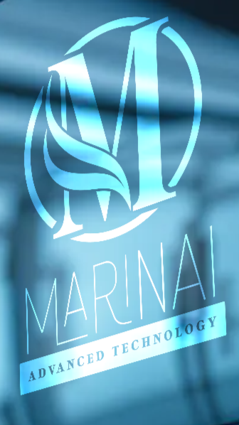

The Future of Oceans and Technology
Using Artificial Intelligence and Blockchain to safeguard the marine ecosystem and ensure a sustainable future.
AI technologies allow us to monitor and map changes in our oceans with unparalleled precision.
Analyzing marine species behavior to help preserve and protect endangered animals.
Decentralized technology ensuring transparency and promoting responsible fishing practices.
Blockchain technology allows us to track the journey of seafood from ocean to plate, ensuring ethical sourcing.
MarinAI bridges the gap between emerging technologies and the pressing need to protect our planet's oceans for future generations.